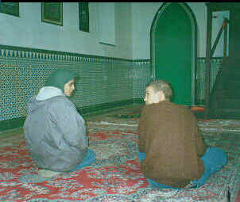

This article is
no longer accurate, since an estimated 450 Muslims live in Cuba.
However, it is left online for its historical value.

Fatemah
Shaikh, a member of a South African brigade on a solitary visit
to Cuba , made it her personal mission to look for a Cuban Muslim
in one of the world's remaining Socialist/Communist countries.
Shaikh and Hassen Ebrahim relate the tale of the search and their
realisation that there was no need to conquer.
In search of
a Cuban Muslim
A South African Cuban solidarity
brigade, the Alex La Guma Brigade - named after the South African
writer who died in exile in Cuba, recently went to pay homage
to La Guma and, as a solidarity brigade, to learn about the lives
and struggles of the Cuban people under a US-imposed embargo.
The 38 South Africans spent one
month in Cuba visiting different areas, attending lectures and
working in the fields - picking nectarines and oranges. Integrated
into this rather hectic schedule Fatemah's mission - which others
from the group were unsuspectingly drawn into - was to find a
Muslim in this "atheist" state whose official "religion"
was communism.
Cuban tourist brochures inform
the visitor there is "thorough freedom of religious practices.
Most believers are Catholics. A number of churches are spread
over the country, religious services are conducted every day:
masses, baptisms, weddings, requiems and confessions. Afro-Cuban
religions (a merging of African pantheons and Catholic Saints)
are deeply rooted."
Nothing is mentioned of the world's
other religions, including Islam.
Led by Fatemah, the search was on.
Everybody in Cuba knows the Catholic Saint, the Lady Fatima. This
put our Fatemah under some strain to explain on numerous occasions
and in broken, hastily learnt Spanish: "Me llamo Fatemah.
Soy Muslim. Si Islam. No Catholica!""I am Fatemah, I
am Muslim, not the Catholic one."
Whether by accident or design,
on one Friday, the day of Jumu'ah, we found ourselves at a mosque!
The House of Arabs in Old Havana (La Havana Vieja) which serves
as a souk (market) is piled high with carpets, robes and pottery
- and a place of worship for Muslims.
The curator of the building gave
us a briefing on the origins of the building, which was built
in the 17th century. Like most of the buildings in Old Havana
this one is constructed in Mudejar style - a Christian/Muslim
architectural tradition that evolved in Spain. Because of these
architectural wonders UNESCO declared old Havana a world heritage
site in 1982, and a number of buildings are in the process of
being renovated. The curator told us the mosque was used by foreign
diplomats and foreigners working in Cuba.
Muslim yes, but still no Cuban
Muslims! Fatemah persisted. "What about indigenous Cuban
Muslims?" she asked. The curator replied that they numbered
not more than 20. Fatemah pushed him to provide her with an address
of one. "Lo Siento!" (I am sorry), he said. "We
do not keep such a list!" Perhaps to cheer us up he added
that over 400 Muslim names, like Abdella and Mansur, existed in
Cuban society. These names, we discovered have their roots in
the period of slavery.
Enjoying the beauty of the architecture,
we had missed Jumu'ah prayers but decided not to let this opportunity
pass. Led again by Fatemah, a few Brigadistas prepared to pray
their Zuhr, possibly the first South Africans to perform salah
in this mosque. No Cuban Muslims, but the group was obviously
satisfied with its efforts.
Only a fool will believe that official
approaches to religion will not change. We say this with the knowledge
that Fidel Castro (a Jesuit-educated lawyer and now President
of Cuba) had a highly-acclaimed meeting with the Pope John Paul
III recently. The Pope is scheduled to visit Cuba this year.
During his five-day visit to the
Vatican Castro told Vatican Radio, "We want to create a climate
of trust and good relations with the Church." And in a communiqu‚,
the Cuban Catholic Church archbishop, Jaime Ortega, exhort the
leaders of nations "whose historical, economic or humanitarian
interests link them to Cuba to look for the solution to existing
conflicts in dialogue." He also urged Cuban Catholics to
work in a united way for the future, by preserving the nation's
dignity and freedom."
Meanwhile, we are back home and
reflecting on our experiences, satisfied in the knowledge that
the struggle for national independence, social, economic and political
justice is not incompatible with genuine religious practices and
freedoms and religion does not need the state to survive.
We saw and we learnt. And we know
there is no need to conquer.
al-Qalam Home Page